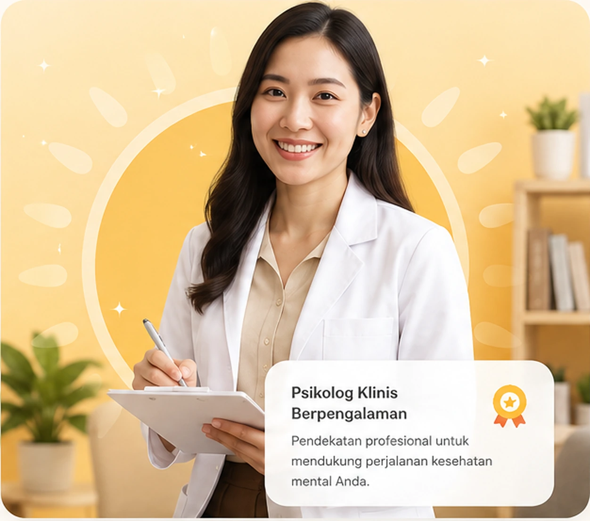

Konseling Individu
Ruang privat untuk memahami emosi, pola pikir, relasi, dan tantangan sehari-hari.
Pelajari lebih lanjut →Klinik Kesehatan Mental Matahari hadir untuk menemani perjalananmu dengan pendekatan yang hangat, profesional, dan tanpa menghakimi.

Kami percaya setiap orang punya cerita, ritme, dan kebutuhan yang berbeda. Karena itu, layanan kami dirancang untuk membantu kamu merasa didengar, dipahami, dan memiliki ruang untuk menemukan kembali keseimbangan.
Komunikasi yang manusiawi dan mudah dipahami.
Pendekatan disusun bersama sesuai tujuan dan kebutuhanmu.
Kamu tidak perlu menunggu semuanya terasa berat untuk mulai mencari bantuan.
Ruang privat untuk memahami emosi, pola pikir, relasi, dan tantangan sehari-hari.
Pelajari lebih lanjut →Pendampingan profesional untuk membantu kamu mengenali kebutuhan dan langkah yang realistis.
Buat janji →Membangun komunikasi yang lebih sehat dan memahami kebutuhan satu sama lain.
Pelajari lebih lanjut →Pemetaan psikologis terarah untuk kebutuhan pendidikan, kerja, atau pengembangan diri.
Tanya sekarang →Tetap mendapatkan pendampingan dari tempat yang membuatmu paling nyaman.
Cek ketersediaan →Materi dan sesi untuk membangun kebiasaan mental yang lebih sehat secara bertahap.
Lihat program →Kamu tidak harus tahu semua jawabannya sekarang. Kita bisa menemukannya bersama.
— Tim MatahariSesuaikan dengan kebutuhan dan tujuanmu.
Kami bantu menemukan waktu yang nyaman.
Datang apa adanya. Tidak perlu menyiapkan cerita yang sempurna.
“Pendekatannya terasa sangat manusiawi. Saya tidak merasa dihakimi dan jadi lebih berani memahami apa yang saya rasakan.”
— Klien, 28 tahun“Proses booking mudah, tempatnya tenang, dan penjelasannya jelas. Sesi pertama saja sudah membantu saya melihat masalah dari sudut pandang berbeda.”
— Klien, 34 tahun“Rasanya seperti punya ruang aman untuk jujur. Saya jadi punya langkah kecil yang bisa dilakukan setelah setiap sesi.”
— Klien, 25 tahunKami jawab beberapa hal yang biasanya ingin diketahui calon klien.
Tidak. Kamu bisa datang untuk membicarakan apa pun yang sedang kamu alami tanpa harus memiliki diagnosis sebelumnya.
Bisa. Ketersediaan sesi online mengikuti jadwal dan layanan yang kamu pilih.
Durasi dapat berbeda sesuai jenis layanan. Saat booking, kami akan menjelaskan durasi dan detail sesinya.
Kerahasiaan dan kenyamanan klien menjadi bagian penting dari proses layanan kami.
Kamu boleh mulai pelan-pelan. Kami siap mendengarkan.